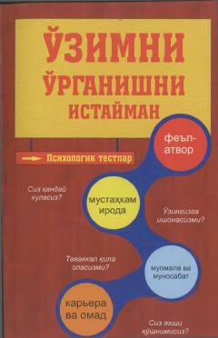

OOQiziqarli psixologik testlar yordamida o'z xarakteringizni kashf eting.
Ushbu kitob insonning o'z fe'l-atvori, xarakteri va shaxsiy xususiyatlarini psixologik testlar yordamida o'rganishga bag'ishlangan. Nashr turli qiziqarli testlar va mashqlar orqali o'quvchilarga o'zlarining ijobiy va salbiy qirralarini aniqlashda hamda ularni tahlil qilishda yordam beradi.